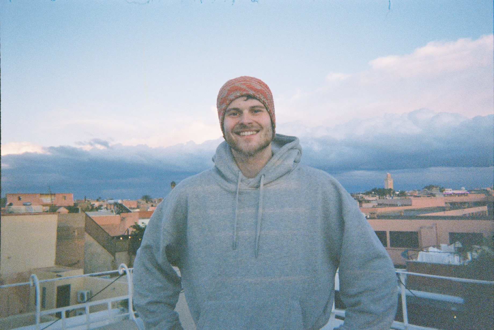

Hi! I'm an MSc Bioinformatics student at the University of Bristol, where I also did my BSc in Biology. I'm interested in population genomics and statistical genetics, and my research so far has focused on introgression, selection and demographic inference in Scottish wildcats.
Fitted 2D demographic models in dadi to a folded joint site frequency spectrum for Scottish wildcat and domestic cat, to characterise divergence and gene flow between the two. Supervised by Mark Beaumont, Dennis Prangle and Grace Yan across the Schools of Biological Sciences and Mathematics.
A GWAS-style scan for domestic cat introgression and signatures of selection across the wildcat genome. Supervised by Mark Beaumont.
Nothing here yet.